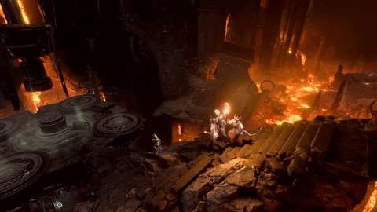

You were not chosen by fate. You were taken.
And now, something ancient whispers in your dreams...
The Campaign
The Chosen of the Absolute is a live Dungeons & Dragons campaign set in the world of Baldur’s Gate 3, played weekly in Orlando, FL. With a player-driven storytelling, this campaign blends the beauty of the game into real life.
Our adventurers explore Faerûn’s deepest shadows: surviving cultists, devils, and uncovering the secrets of the Absolute’s rise. Every session brings new revelations, alliances, and consequences.
The Journey So Far
After barely escaping the nautiloid, the party found temporary safety in one another. They’ve made enemies, sworn oaths, and stared into the eyes of gods and monsters alike. The path ahead winds into shadow-cursed lands, and the tadpoles... stir.
Some seek a cure. Others seek power. But all must answer one question:
What will you become?